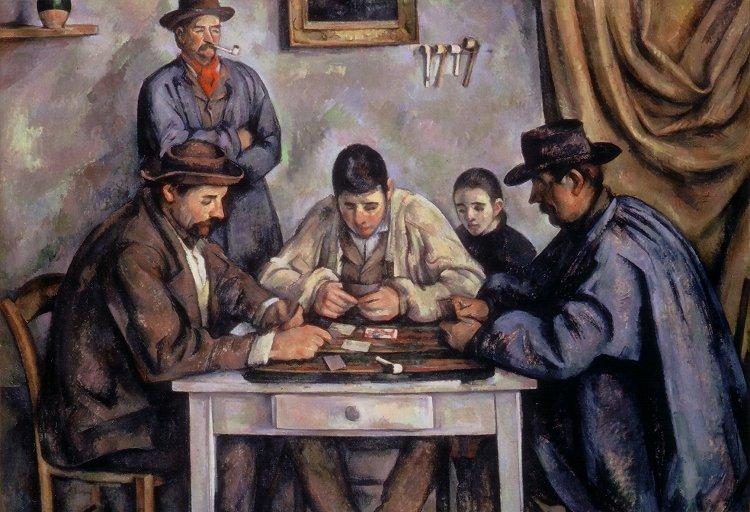

<head>
<meta charset="UTF-8" />
<meta name="keywords" content="drawing, painting" />
<meta name="description" content="drawings by Sunjy" />
<title>Sunjy</title>
<link rel="shortcut icon" type="image/x-icon" href="../../mImages/mCommon/favicon.ico" media="screen" />
<link rel="stylesheet" type="text/css" href="../../mCsses/mCommon/mCssA.css" />
<link rel="stylesheet" type="text/css" href="../../mCsses/mCommon/mCssB.css" />
<link rel="stylesheet" type="text/css" href="../../mCsses/mCommon/mCssC.css" />
<link rel="stylesheet" type="text/css" href="../../mCsses/mCommon/mCssD.css" />
<link rel="stylesheet" type="text/css" href="../../mCsses/mContent/mCssA.css" />
<link rel="stylesheet" type="text/css" href="../../mCsses/mContent/mCssB.css" />
<link rel="stylesheet" type="text/css" href="../../mCsses/mContent/mCssC.css" />
<link rel="stylesheet" type="text/css" href="../../mCsses/mContent/mCssD.css" />
</head>
<script type="text/javascript" src="../../mScripts/mContent/mContentAA.js" /></script>
<script type="text/javascript" src="../../mScripts/mContent/mContentAB.js" /></script>
<script type="text/javascript" src="../../mScripts/mContent/mContentAC.js" /></script>
<script type="text/javascript" src="../../mScripts/mContent/mContentAD.js" /></script>
<script type="text/javascript"></script> 
<script type="text/javascript">
document.write('<div class="mImgAbsolute"></div>');
/*
document.write('<p class="mFontSizeBColor" />From a white paper...</p>');
document.write('<table class="center"><tr><td>');
document.write('');
document.write('</td></tr></table>');
*/
</script>


<script type="text/javascript">
document.write('<p class="mFontSizeBColor" />The Card Players</p>');
document.write('<p class="mFontSizeSColor" />“The Card Players” by  Paul Cézanne is one in a series of five oil paintings by the French Post-Impressionist artist painted during Cézanne’s final periods in the early 1890s.<br><br>This version is the largest version and the most complex of the series. It is composed of five figures, featuring three card players at the forefront, seated at a table, with two spectators behind. It has been speculated that Cézanne added the spectators to give depth to the painting. There is tension in the way the various players are contrasted by color, light and shadow, the shape of hats, and the clothing all representing confrontation through opposites.<br><br>Cézanne’s created many preparatory works for the Card Players paintings, which indicates his commitment to this series of paintings. Rather than posing his players as a group playing card, Cézanne made studies of them individually and only brought them together in his paintings. Many different farm workers came to sit for him throughout this project, often smoking their clay pipes. Cézanne experimented with his compositions, striving to express the essence of these farmworkers and their traditional card game. This project resulted in five closely related paintings of different sizes showing men seated at a rustic table playing cards.<br><br>One version of The Card Players was sold in 2011 to the Royal Family of Qatar for a price variously estimated at over $250 million. It became the third or fourth most expensive work of art ever sold.<br><br>Paul Cézanne was a Post-Impressionist painter who laid the foundations of the transition from the 19th-century Impressionism to the 20th century’s Cubism. Both Matisse and Picasso have remarked that Cézanne “is the father of us all.” Cézanne’s art is characterized by repetitive, exploratory small brushstrokes that build up to form complex color fields, demonstrating his intense study of his subjects.<br></p>');
document.write('<table class="center" /><tr><td>');
document.write('<br>This version is the largest version and the most complex of the series. It is composed of five figures, featuring three card players at the forefront, seated at a table, with two spectators behind. It has been speculated that Cézanne added the spectators to give depth to the painting. There is tension in the way the various players are contrasted by color, light and shadow, the shape of hats, and the clothing all representing confrontation through opposites.<br><br>Cézanne’s created many preparatory works for the Card Players paintings, which indicates his commitment to this series of paintings. Rather than posing his players as a group playing card, Cézanne made studies of them individually and only brought them together in his paintings. Many different farm workers came to sit for him throughout this project, often smoking their clay pipes. Cézanne experimented with his compositions, striving to express the essence of these farmworkers and their traditional card game. This project resulted in five closely related paintings of different sizes showing men seated at a rustic table playing cards.<br><br>One version of The Card Players was sold in 2011 to the Royal Family of Qatar for a price variously estimated at over $250 million. It became the third or fourth most expensive work of art ever sold.<br><br>Paul Cézanne was a Post-Impressionist painter who laid the foundations of the transition from the 19th-century Impressionism to the 20th century’s Cubism. Both Matisse and Picasso have remarked that Cézanne “is the father of us all.” Cézanne’s art is characterized by repetitive, exploratory small brushstrokes that build up to form complex color fields, demonstrating his intense study of his subjects.<br>" />');
document.write('</td></tr></table>');
</script>


